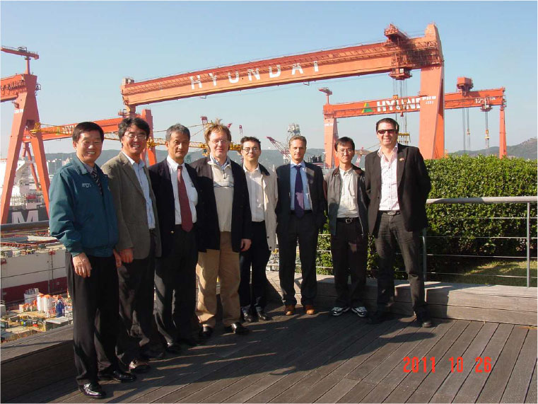

<!DOCTYPE html>
<html>
<head>
    <title></title>
    <!-- Meta Tags -->
    <!-- External CSS -->
    <link rel="stylesheet" type="text/css" href="less/style.css">
    <meta name="viewport" content="width=device-width">
    <meta charset="utf-8">
    <!-- External javascript -->
    <script src="js/jquery-2.0.3.min.js" type="text/javascript"></script>
    <script src="js/script.js" type="text/javascript"></script>
</head>
<body>
    <div id="wrapper">
        <div class="inner">
            <header>
                <div class="text">
                    COCKERILL MAINTENANCE & INGENIERIE
                </div>
                <div class="logo">
                </div>
                <div class="viz">
                </div>
            </header>
            <div class="inner">

                <!-- end of header -->
                <div id="content">
                    <div class="left">
                        <div class="inner">
                            <div class="padd">
                                <p>
                                    <strong>
                                        CMI designs, upgrades and services equipment for Energy, Defence,
                                        Steelmaking and other industry markets and aims to improve economic, technical
                                        and environmental performance of industrial equipment throughout its life- cycle.
                                    </strong>
                                </p>
                                <p>
                                    Supported by some 3 400 members of staff, the Group boasts operational units in
                                    Brazil, China, Europe, India, Russia and the US, supported by an international marketing and sales network.
                                </p>
                                <p>
                                    CMI masters technologies as welding, machining, assembly commissioning of industrial equipment. It could be involved by
                                    <strong>workshop and site activities in rang 2 or 3 on various main and peripherical components of the reactor.</strong>
                                </p>
                                <p>
                                    <ul class="ul_square_list">
                                        <p>
                                            <li>
                                                 <strong>Large experience in the nuclear field: </strong>
                                                reactor vessel, steam generator, pressurizer, accumulator, containers, temporary reactor heads…
                                            </li>
                                        </p>
                                        <p>
                                            <li>
                                                 <strong>Dedicated Business Unit </strong>
                                                (CMI Muon and its 4 agencies) and
                                                <strong>significant references </strong>
                                                ( EDF and Electrabel)
                                            </li>
                                        </p>
                                        <p>
                                            <li>
                                                  About 1000 members in France and Belgium specialized for interventions and proximity services: <br />
                                                - Engineering and Project management  <br />
                                                - Inspection, assessments and analyses <br />
                                                - Preventive, corrective and global maintenance <br />
                                                - Valves, fittings and Pipe-work <br />
                                                - Manufacturing and repairs Engineering <br />
                                                - Surface treatment and parts cleaning <br />
                                                - Machining and welding(shop and site)  <br />
                                                - Heavy components site assembly <br />
                                                - Turbines, rotating machines, diesel engines<br />
                                            </li>
                                        </p>
                                        <p>
                                            <li>
                                                 <strong> Relevant qualifications: </strong>
                                                ISO 9001, ISO 14001, ASME 3, CEFRI, UTO   
                                            </li>
                                        </p>

                                </ul>
                                </p>
                                <div></div>
                                &nbsp;<br />
                            </div>
                        </div>
                    </div>
                    <div class="right">
                        
                        
                        
                        <div class="clear">
                        </div>
                        <br /><br /><br />
                        <strong>Contact Person </strong><br /><br />
                        Mr Carlo Flebus <br />
                        Optical &amp; Mechanical Engineering Department <br /><br />
                        email: <a href="bill.collin@amos.be">bill.collin@amos.be</a>, <a href="carlo.flebus@amos.be">carlo.flebus@amos.be</a>, <a href="pierre.gloesener@amos.be">pierre.gloesener@amos.be</a><br />
                        tel: +32 4361 4040<br />
                        fax: +32 4367 2007 <br />
                        <a href="www.amos.be">www.amos.be</a><br /><br />
                        Liege Science Park, <br />
                        Rue des Chasseurs Ardennais, 1 <br />
                        4031 Angleur <br />

                    </div>
                    <div class="clear">
                    </div>
                </div>
                <!-- end of #content -->
                <footer></footer>
                <!-- end of footer -->
                <div class="sideline">
                </div>
            </div>


        </div>
    </div>
</body>
</html>
